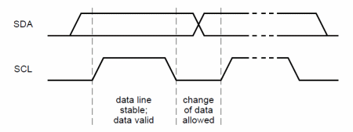
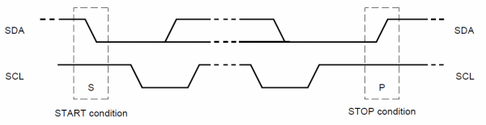
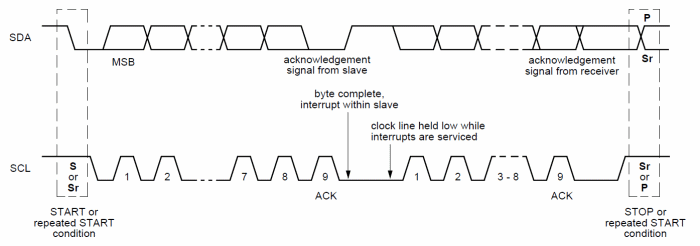
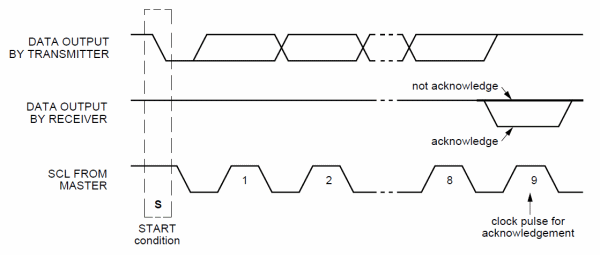
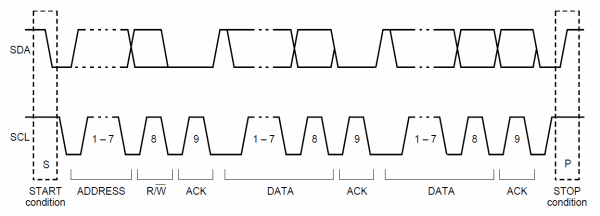
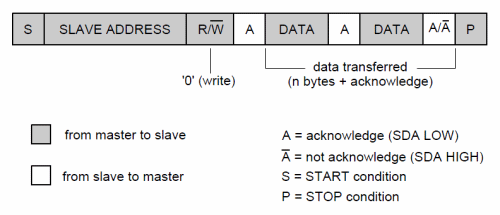
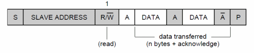
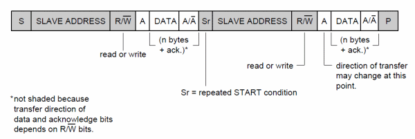
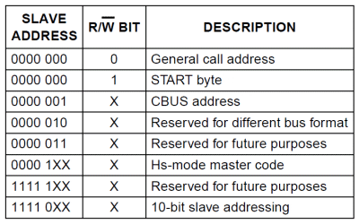

简介
I2C是一种总线结构, 只有两条线, 一根是SDA(双向的串行数据线), 一根是SCL(时钟线). I2C的协议就是规定如何使用这两条线在两个设备间传输数据. 本文包括I2C协议、ARM中I2C的寄存器以及LINUX下的驱动程序.
所有的I2C设备:主设备(master)和从设备(slave)都使用两根线连接. 每个设备都可以作为发送方, 接收方或者两者. 设备作为master时, 产生时钟信号并且初始化总线. 其他设备则作为slave, 负责响应master的命令. 总线上可以连接多个I2C设备, 为了和特定的设备通信, slave会有一个特定的地址. 地址分为固定部分和可编程部分, 细节视芯片而定. 广播地址为全0. master则不需要地址. SDA传输数据采用大端传输, 每次传输8bit.
IIC的基本操作
术语
- 发送方(Transmitter): 往总线上发送数据的设备
- 接收方(Receiver): 从总线上接收数据的设备
- 主设备(Master): 产生时钟, 发起/结束通信, 发送I2C命令的设备
- 从设备(Slave): 监听总线, 被master编址的设备
- 多主控(Multi-master): I2C支持多于一个主设备, 每一个都可以发送命令
- 仲裁(Arbitration): 当多个master需要使用总线时, 决定谁来用的过程
- 同步(Synchronization): 有多个设备时同步时钟的过程
基本操作
串行数据传输

一个时钟周期传输一比特; 当SCL为低电平时, SDA才能改变传输的比特; SCL为高电平时, SDA保持稳定, 视为有效数据.
开始和结束信号

- 开始信号: SCL为高电平时, SDA由高电平向低电平跳变, 开始传送数据.
- 结束信号: SCL为高电平时, SDA由低电平向高电平跳变, 结束传送数据.
I2C数据传输

I2C总线每次传输8比特(一字节)数据, 没有限制传输多少个字节, 但每字节后面都需要跟一个ACK(acknowledge bit). 这个确认位用来指示设备是否准备好处理下一个字节. 如果slave没有ACK则意味着没有数据了或者它还没有准备好传输. 则master必须产生结束信号(stop)或重开始信号(repeated start).

同步
仲裁
使用7比特地址通信

总线上的每个slave设备都需要一个唯一的7比特地址. 通信时首先发送一个开始信号, 然后是7比特slave地址和1比特数据方向(0代表写数据到slave, 1代表从slave读数据). 然后mater就可以写或者读数据了. 结束信号用于结束通信和释放总线. 如果master还想和其他slave通信, 则不需要产生结束信号, 直接发送repeated start信号即可. 字节以大端传输(MSB).



有时候master要先向slave写点数据然后再读点数据. 在这种情况下写完后要修改数据传输方向. 需要发送repeated start信号并再次发送slave地址和R/W比特. 如果不需要修改方向, 则可以一直写或者读数据.
编址
I2C地址由I2C总线委员会管理, 有8个保留地址, 其中一个用于10比特地址. 其中全0是广播地址, 如果某slave不需要响应或不支持广播则需忽略此请求. 如果需要接收信息则得回应一个ACK. 
Start Byte
If microcontroller has I2C hardware and the microcontroller acts as a slave then the software needs to do nothing to check the bus state. The I2C hardware will detect Start condition, receive the I2C address and interrupt the software if necessary. However, if the I2C interface is implemented by the software, the microcontroller has to sample SDA line at least twice per clock pulse in order to detect changes. To simplify detection of I2C commands on the bus in such cases, a special I2C address called Start byte is used. Such start byte (0000 0001) is followed by an acknowledge pulse (for interface compatibility reasons). This combination holds the SDA line low for 7 clock pulses and allows simple detection of active I2C bus with lower sampling frequency.
如果I2C控制器作为slave, 则软件不需要检查总线状态. 硬件会检查开始信号、接收I2C地址、触发中断. 如果I2C接口由软件实现, 在一个时钟周期内需要采样SDA两次,才能检查到改变.

扩展
ARM的IIC描述/寄存器
代码操作